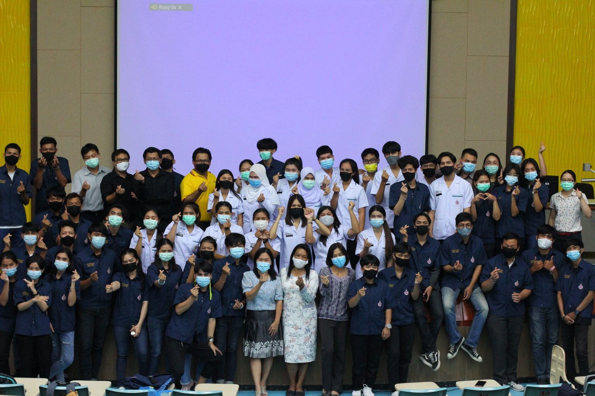
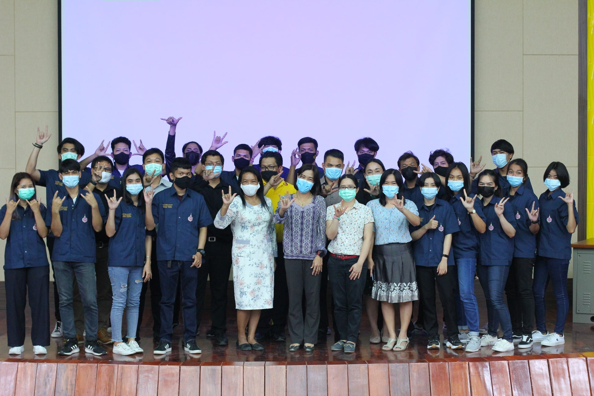

หลักสูตรเทคโนโลยีสารสนเทศและนวัตกรรมดิจิทัล
ชื่อหลักสูตร
ภาษาไทย: หลักสูตรวิทยาศาสตรบัณฑิต สาขาเทคโนโลยีสารสนเทศและนวัตกรรมดิจิทัล
ภาษาอังกฤษ: Information Technology and Digital Innovation
ชื่อปริญญา
ภาษาไทย: วิทยาศาสตรบัณฑิต (เทคโนโลยีสารสนเทศและนวัตกรรมดิจิทัล)
ภาษาอังกฤษ: Bachelor of Science (Information Technology and Digital Innovation)
ปรัชญา / วัตถุประสงค์
หลักสูตรเทคโนโลยีสารสนเทศและนวัตกรรมดิจิทัล สำนักวิชาสารสนเทศศาสตร์ มหาวิทยาลัย มีปรัชญาในการมุ่งเน้นผลิตนักเทคโนโลยีสารสนเทศที่มีคุณภาพ สามารถทำงานได้จริงในสาขาอาชีพ เป้าหมายของหลักสูตร โดยมีความรู้ทั้งในด้านเทคโนโลยีสารสนเทศและความรู้ด้านการจัดการ สามารถบูรณาการความรู้สู่การปฏิบัติจริง โดยเน้นการเรียนไปในแนวทางด้านการพัฒนาโปรแกรม ประยุกต์ทั้งบนเว็บและอุปกรณ์เคลื่อนที่ นอกจากนี้ยังมุ่งหวังให้บัณฑิตต้องเป็นผู้ที่มีจริยธรรมในการ พัฒนาและใช้งานเทคโนโลยีสารสนเทศอีกด้วย
ทางหลักสูตรเทคโนโลยีสารสนเทศและ นวัตกรรมดิจิทัลได้ตระหนักถึงความสำคัญในการพัฒนาบุคลากรให้มีความรู้ความสามารถใน เทคโนโลยีสารสนเทศ เพื่อรองรับการพัฒนาประเทศตามยุทธศาสตร์ชาติระยะ 20 ปีของประเทศไทย ตลอดจนรองรับความต้องการของภาคอุตสาหกรรมในยุคเศรษฐกิจใหม่ เพื่อให้ประเทศไทยมีความ มั่นคง คนในชาติมีคุณภาพชีวิตที่ดี และมั่งคั่ง และสามารถพัฒนาประเทศไปได้อย่างยั่งยืน
คุณลักษณะของบัณฑิตที่พึงประสงค์ของหลักสูตร
อาชีพ Business Analytics (BA) หรืออาชีพนักวิเคราะห์ธุรกิจ ทำหน้าที่เหมือนเป็นนักแก้ปัญหาให้องค์กร โดยผ่านการวิเคราะห์ของข้อมูล เพื่อแก้ไขหรือปรับปรุงธุรกิจให้ผ่านพ้นวิกฤติหรือเติบโตได้อย่างราบรื่น ทำให้ต้องประสานงานทั้งในองค์กรและนอกองค์กรอย่างหนัก ทักษะที่ต้องมีคือเรื่องของการสื่อสาร รวมถึงการกำหนดเป้าหมายในการแก้ปัญหาแต่ละครั้ง ทำให้ BA ต้องมีทักษะเรื่องธุรกิจสำหรับมองการตลาดและบริหาร รวมถึงความรู้เศรษฐศาสตร์ เพื่อมองภาพธุรกิจในมุมที่กว้างและคิดถึงผลกระทบมากขึ้น ปัจจุบันตอนนี้ ทักษะที่ต้องมีเพิ่มและหลายบริษัทต้องการ คือความรู้ด้านไอที หรือสามารถมองปัญหาผ่าน Data เยอะๆได้ เพราะองค์กรที่เติบโตส่วนใหญ่ต้องมีเทคโนโลยีมาเกี่ยวข้อง System Analytics (SA) หรืออาชีพนักวิเคราะห์ระบบ คือ ผู้วิเคราะห์ปัญหาและนำมาเปลี่ยนให้เป็นรูปที่เหมาะสมสำหรับการประเมินค่าด้วยเครื่องคอมพิวเตอร์ รวมถึงการวางแผนงาน การสั่ง การทบทวนโครงการ ประมวลผลโดยคอมพิวเตอร์ และการจัดทำรายงานเกี่ยวกับโครงการที่ทำไปแล้ว พิจารณานำระบบคอมพิวเตอร์มาใช้เพื่อช่วยในการดำเนินงาน นักวิเคราะห์ระบบ (SA) ต้องพิจารณาทั้งการนำเครื่องคอมพิวเตอร์และอุปกรณ์ (Hardware) โปรแกรมควบคุมระบบ/โปรแกรมอื่นๆ (Software) ระบบเครือข่าย (Network) และบุคลากร (People) มาใช้งานให้ได้อย่างเหมาะสม อาชีพ Front End Developer (FED) หรืออาชีพนักพัฒนาส่วนหน้า ต้องทำงานร่วมกับ Account Manager (ผู้ดูแลลูกค้า หรือบางทีเป็น ผู้จัดการโครงการ), Copywriter (คนเขียนก้อปปี้ข้อความต่างๆให้สละสลวย), Graphic Designer (ทำรูปภาพต่างๆในเว็บไซต์ให้สวยงาม) และทีมอื่นๆ เพื่อสร้างทั้งภาพ เสียง ไอคอน แบนเนอร์ ข้อความ ต่างๆประกอบกันออกมาเป็นหน้าเว็บไซต์ที่สมบูรณ์ การเป็น Web Developer ต้องเลือกสายคือ Front-End และ Back-End Front-End Developer ดูแลด้านหน้า Web หน้าตาของเว็บไซต์ทั้งหมด จะมีความใกล้ชิดกับ User มากกว่า Back-End Front-end แบ่งเป็น 2 สายคือ

{kind=link}
{kind=link}
{kind=link}
{kind=link}
{kind=link}
{kind=link}
{kind=link}
{kind=link}
{kind=link}
{kind=link}